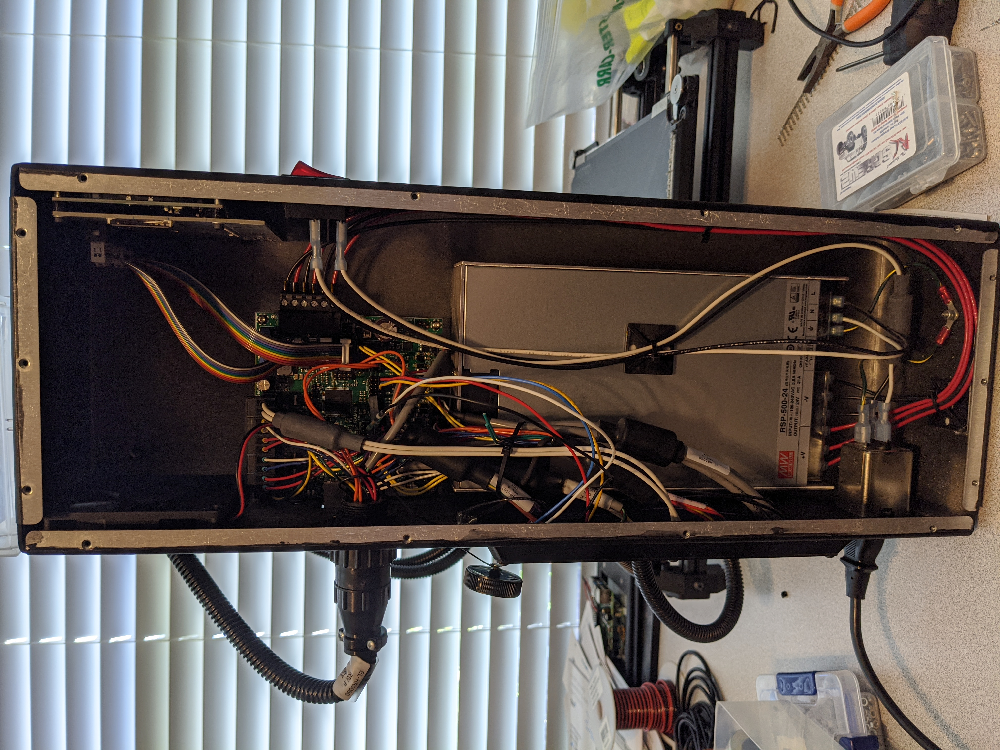

Tutorial - Taz 6 BLTouch with IT-Works 3D print heads¶
This tutorial will walk through the installation of a BLTouch on a TAZ6 that is using print heads from IT-Works 3D.
Parts Used¶
1x - BLTouch
17x - M3 Heat-Set Inserts
5ft - 22 gauge Black Wire
5ft - 22 gauge White Wire
5ft - 22 gauge Red Wire
5ft - 22 gauge Brown Wire
5ft - 22 gauge Orange Wire
2x - M3 10mm Screws
4x - M3 Self locking nut
Remove the print head from the printer

Remove the side cover from the printer
Remove the rear cover from the printer

Cut the wire ties holding the cables to the printer frame.